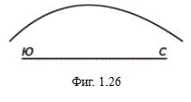

Беседа 2818 от 3877 · Беинса Дуно
Отворени и затворени очи
Отче наш.
Имате ли зададена тема? – /Имаме./ – Четете. /Чете се темата „Функции на белия дроб“/ – Пишете върху темата „Ползата от историята като наука“.
Трябва да се създаде интерес. Да имате интерес, да има неща, които да ви привличат. Запример, по какво се отличава твърдата почва? По какво се отличава водата? По какво се отличава въздухът? По какво се отличава светлината? Казваме, че земята е твърда. По какво се отличават твърдите вещества? Те се отличават по това, че каквото хванат, задържат за себе си. Казват: „Това е за нас“. Нищо повече. А течните вещества, те всичко разтапят и го завличат, носят го. Въздухообразните вещества подигат нещата. Като дойде въздухът, ще подигне листата, ще започне да ги дига нагоре, играе си с тях. А пък светлината като дойде, тя разкрива всички тайни, всички скрити работи. Като дойде тя, като някой репортьор ще започне да човърка оттук-оттам, да извади нещо, което са го скрили, ще го извади на белия свят. Питам сега: Ако всичко излезе на белия свят какво ще остане? Нали казвате: „Бели да бъдем“. Ако всички бяхме бели, какво щеше да стане с материалния свят? Всичките хора искат да бъдат чисти, всички искат да имат бели дрехи. Всичките, ако бяха бели какво щеше да стане със света? Думата „бял“ това е едно отношение, това е една дълбока философия. Ако не разбирате отношението на белия цвят, и белината сама по себе си ще ви създаде неприятност. Ако идете на северния полюс, ще ви заболят очите от белия цвят. Всичко наоколо като погледнеш, все бяло. Туй е отчасти вярно, така може да се говори.
Казвате: „Няма нищо добро в света“. Вярно е, няма нищо добро в света. Но и другото е вярно: няма нищо лошо в света. Колкото е вярно едното, толкова е вярно и другото. Няма нищо добро в света – вярно е, но и няма нищо лошо в света. И туй е вярно. Кое е вярно? То е отношение. Казваме: „Няма нищо добро в света“. Какво трябва да подразбираме под думите: „Няма нищо добро в света“. Вие трябва да разбирате в света в дадения случай, в твоя живот, в твоето разбиране, тъй както си неразположен. Казваш: „Няма нищо добро в дадения момент“. Един момент, който не може да го определиш каква част от времето завзема. С моменти се мери времето. Моментът е мярка за времето. Моментът мери времето, не времето момента. Нищо повече. Защото един момент е Божествен момент. Моментът включва хиляди години. За Бога, туй което е момент, като се е кратковременно, векове може да минат за хората. Казва, в едно мигновение щяло да стане всичко, но туй мигновение години ще минат, докато мине. Казвам, под думата „мигновение“ разбираме разумното, когато всички неща ще се оправят. В един миг светът ще се оправи. Какво трябва да разбираме под думите: „В един миг светът ще се оправи“. Каква част от време съставя едно мигане? Колко време завзема едно мигане? Те са два момента: затваряне и отваряне на очите. Един момент, когато в твоето съзнание всичко потъмнява. Казваш: „Няма нищо в света“. Значи затворени са моите очи. Значи, никаква светлина не виждаш. „Всичко е добро в света“ – отварям си очите всичко виждам. Аз тълкувам. Като кажеш: „Няма нищо добро в света“ – затворени са очите ти, сляп си. Отваряш очите си, всичко е добро. За да има нещо добро в света, какво трябва? Очите трябва да се отворят. Като са затворени очите, няма нищо добро в света, нищо не те интересува. Като се отворят очите, всичко те интересува. Виждаш ябълки, круши, сливи, книги четеш. Затвориш очите си, няма нищо в света. Вие казвате, че вас ви дотегна да живеете. Затворени ти са очите. Кажеш: „Живее ми се“ – Отворени ти са очите. „Мене не ми се учи“ – Затворени са очите ти, какво ще учиш. Казваш: „Учи ми се“ – Отворени ти са очите. – „Нямам никакъв стимул за живота, нищо не ме интересува“ – Затворени са очите ти. За да се интересуваш, какво трябва да имаш? – Ще си отвориш очите.
Сега запример, вас кое ви застави тази сутрин да дойдете тук? Какъв е поводът, за да станете в четири часа, в пет часа да дойдете тук? На легло трябваше да бъдете, да почивате под юргана. Вие напущате топлото легло, юргана. За какво сте дошли тук, за топлата соба, за изгрева на слънцето? Може би за тия четири лампи, които светят? Но и у вас има лампи. При това, сега минавате всички за философи, разрешавате много важни въпроси, социални въпроси, морални въпроси: има ли Господ, няма ли Господ, какъв е смисълът на живота, отношението на хората, в музикално отношение какъв трябва да бъде човек, за силата на човека, за сиромаси, за богати, учени, какви ли не въпроси. Всичките въпроси остават неразрешени. Какво представлява един социален въпрос? Един социален въпрос, това е сбор от нерешени задачи, един сборник. Какво трябва да се прави с този сборник? Ще вземеш този сборник, ще започнеш задача подир задача да разрешаваш. Всичките задачи ще ги разрешаваме. Казваш: „Аз изучавам социалните въпроси“. Какво си изучил? Коя е първата задача в социалните въпроси? Онези, които сте завършили гимназия, в задачника, коя е първата задача? Коя е първата задача, която започват в първо отделение? В първо отделение, това е буквата „А“. Въпросът е: Написано ли е туй „А“ както трябва? Ще каже някой, че е написано. Как трябва да се пише „А“-то? „А“-то е кръгът на живота. Що е „А“-то? – Първата буква. „А“-то е първата буква с която тебе те натоварват. Като кажеш „А“ ще се учиш как да се товариш. „А“-то ще те товари. Всеки, който казва: „Аз съм“ – той е натоварен вече. Този учен човек казва: „Аз съм учен“. Умът му е натоварен. Дойде моралният човек, казва: „Аз съм“ – Сърцето му е натоварено. Дойде физическият човек, казва: „Аз съм“ – И той е натоварен. Тялото е натоварено, този човек има 150 килограма, бабачко! Другият, който сърдечно е натоварен, много страдания има, той постоянно се тревожи – тревоги, тревоги, морални тревоги; погрешка тук, погрешка там, тук скъсан, там опърпан постоянно. Моралът не е нищо друго освен чистене. Вземеш четката и се чистиш. Допрял си се до някоя стена, бяло има на дрехата, вземеш четката и се изчистиш. Какво има, че има бяло на дрехата? Ще дойде слугинята да ти чисти. Не става така. Защо не става? Бялото може да е на плата отгоре. Вие от стената не искате бяло, а туряте бяла панделка. Черното не ви е приятно. Но някой път на една бяла шапка може да турите черна панделка. Панделка: „пан“ – значи голямо, „дел“, значи с голями работи се занимава. Панделката сама по себе си е нищо, но с големи работи се занимава. Панделката, която нищо не знае, но името ѝ е голямо. Каква е големината? Два–три пръста широка, една корделка около три сантиметра, носи името панделка.
Хубаво, казва: „Аз съм моралист“. – Панделка. „Аз съм учен човек“. – Панделка. Коя е учената панделка? То е един кръг. Значи това са условията. „А“-то, това е условие, при което започва животът. Значи, първата буква „А“ е това, което събужда. Щом се събуди съзнанието на човека, иде гласната буква „А“. Имаш вече две идеи в ума си, две противоположности имаш. Минаваш от едното състояние в другото. Едновременно две състояния трябва да имаш, образуват се два полюса.

Ще ви приведа един пример. Да допуснем имате един револвер. Веднага ударите един куршум. Питам, като мине вече куршума в чашата, вече е пробита, счупена. Питам: Туй, което произведе туй явление, счупи чашата, къде е? Няма го, но вие вече имате резултатът. Дупката виждате. Кушумът там ли е? Няма го. Светлината, която прави в даден момент нещата видими, тя е изчезнала, но останал само резултатът. Следователно ние виждаме само резултатът на светлината. Същинската светлина още не е видима на хората. Следствие на това, имаме за себе си понятие. Казвате: „Светът е тъмен“. Именно в света туй, което е тъмно, то е реално. Туй, което не знаеш, то е реално, а туй, което знаеш, то е нереално. Трябва да разсъждавате. Сега вие казвате: „Защо е така?“ Но твоето незнание, това, което ти не знаеш, другите го знаят. Тебе те интересува един въпрос, за друг човек този въпрос е обикновен. Той го проучил.
Та представете си сега едно същество, което знае толкоз, то разбира научно работите. Туй същество знае, какво има да ви се случи откакто се родите, докато свършите живота си, знае какво ще ви се случи. Ще кажете: „Как го знае?“ Нали сега вие казвате: „Как може да знае всичко? Не може да знае всичко“. Та вие сте всезнающи. Първата буква е „А“, последната коя е? Аз съм невежа. Мисля така се пише „ “. Колко букви са всичките? Хубаво, да кажем, че са 32. Кажете точно, колко са? – 32, опасна работа! Един дом дето майката е жива и синът, бащата е в странство, работите не вървят. Но както и да е. Имате 32. Те са 32 елемента, с които е устроена речта. Всякога в живота всичките противоречия произтичат от това, че вие не знаете да произнасяте буквата „А“. Не знаете как да произнасяте буквите. Като ги произнасяте по различни начини, като ги съчетавате, правите какви ли не работи. Някой път лошо ви се случва. Да кажем ти напишеш „горчиво“ какво ще ти стане? Ще се вгорчиш. Напишеш „зло“, зъл ще станеш. Напишеш „богатство“, богат ще станеш. Напишеш „светия“ светия ще станеш. Каквото напишеш, туй ставаш в даден случай. Вярно ли е това? Вярно е, само че вие като напишете светия сам не вярвате в светията. Ето аз как обяснявам. Представете си, един сляп човек служи на вас и вие му дадете една кибритена кутия. Този сляп човек се научава да пали свещта, макар, че не вижда. Драсне, напипва лампата, запали свещта. Той запали свеща, но сам не се ползува от свещта. Понякой път гледам много хора има между вас, вие говорите за някои неща, но сами не се ползувате. Казвате: „Добро“, но доброто заради вас е непонятно. Вие не може да схванете, какво нещо е добро. Запример, някой път вас ви е мъчно, ставате сутрин неразположен. Защо сте неразположен? Сега философската страна, защо човек е неразположен? Неразположението значи има малко светлина. Когато няма светлина, затова е неразположен! Защо е неразположен гладният? – Защото не е ял. Защо е разположен сития? – Защото е ял. Защо е разположен богатият? – Защото е забогатял. Защо е неразположен сиромахът? – Защото е осиромашал. Защо е неразположен ученият? Всеки човек е неразположен от това, което няма. Значи, ти си разположен в даден случай, когато си придобил нещо, колкото и малко да е, придобивка. То са относителни неща. Но всяка една придобивка, която донесе на човека една малка радост, тя е реална. Всички неща, които се явяват в съзнанието и придобиват една малка придобивка, колкото и малка да е, те са неща реални. Всички ония неща, които не придобиват, които носят страдание, изгубваме нещо. Щом изгубим нещо винаги страдаме. Казвам: Сега страданията имат две страни. Страданието е един подтик. Страданието иде всякога в един момент, когато ти ще печелиш нещо. Страданието иде като страха. Казва: „Внимавай господарю, зад тебе има нещо оставено, гледай да го вземеш, да не го изгубиш!“ Страданието е една малка спирка. Ти си толкоз голям аристократ, че всяка спирка ти причинява вреда. Светлината, като се спре само една триста хилядна от секундата, причинява едно малко страдание. Всякога, когато се спираш някъде, се ще пострадаш. Всякога, когато тръгваш, ще се образува една малка радост. Спираш се – страдание; тръгваш – радост.
Какво разбрахте сега? Разбиране, значи светлина. Разбирам, че се спирам. Защо се спирах? После може да питаш пак. Тръгнах, защо тръгнах? Всякога в природата ти тръгваш, за да придобиеш нещо. Защо тръгваш? Отиваш на търговия. Отиваш да се учиш. Отиваш да се молиш. Или размишляваш, какво може да правиш в себе си – имаш едно движение. Тази сутрин вие тръгнахте на търговия, дойдохте да спечелите нещо. Осиромашал си. Защо отиваш в гостилницата? Защо? Да забогатееш. Излизаш из гостилницата. Като влизаш в гостилницата, отиваш да забогатееш, понеже са те натоварили повече в гостилницата ти излизаш навън, пак да печелиш. Аз говоря за вътрешните процеси, не за това, което става отвън. Ти отиваш като търговец, като учен човек, каквото и да правиш на земята този процес трябва да го намериш вътре в природата.
Съществува един процес. В природата казват, че сте пратени на земята, в невидимия свят сте седели в бездействие. Горе като сте нямали работа, станало ви тежко. Да ви представя пример. Детето, майка му го много обича, говори му много любезно, възлюбленото е в къщи. Но майка му като работи, то е постоянно палаво; днес направи една пакост, утре друга пакост. То иска да направи нещо. Майка му, за да се освободи от неговите пакости, го праща в училище да има с какво да се занимава. Вас сега от невидимия свят, понеже сте бъркали, искали сте да направите нещо, пратили са ви тук да не бъркате. Сега трябва да учите по единствената причина, понеже като се върнете в другия свят за да не бъркате. За да може да останете там, да ви дадат служба, тук трябва да учите. Ако не се учите тук, работа няма да има горе. Ще кажете какво сте научили. Представете си, че ще държите една лекция в другия свят – представете си, че тук на земята сте били странник, 50–60 години сте били на екскурзия. Представете, че като идете, ще държите лекция за този свят. Представете си, че сте в онзи свят, държите лекция за този свят. Как ще държите лекцията, да направите този свят понятен за другия свят. Представете си, че аз на вас ви говоря, какво нещо е изгаряне, какво нещо е светлината, разправям ви, разправям ви. Казвате: „Не разбирам“. Този човек на когото разправям никога не се горил. Разправяш, че има една сила в света, която гори, гори и изгаря човек. – „Че как може да изгори?“ Какво трябва да направиш? Много лесна работа е. Ще извадиш една кибритена клечка, ще драснеш клечката и като я туриш на неговата ръка, ще разбере. Дето ще разправяш с часове, като го опариш с огъня, той веднага разбира, какво нещо е горението.
Та природата най-първо ни осведомява с реалността да почувствуваме, какво нещо е горението. След това тя започва да ни обяснява, какво нещо е изгарянето. Ние на земята искаме да разберем нещата преди да сме ги почувствували. Казвате: „Аз искам да бъда добър“. Какво нещо е доброто не го знаеш. Какво нещо е доброто сега? Не се смущавайте, защото и най-големите философи в света и те не знаят, какво нещо е доброто. Може да се говори относително, какво нещо е доброто, но конкретно какво нещо е доброто и най-големите философи не знаят. Какво нещо е злото? Като попитали най-големия египетски мъдрец, какво нещо е злото, той само си стиснал устните. Какво нещо е доброто, никой до сега не е разрешил. И най-големите мъдреци като ги попитате какво нещо е доброто, мълчат. Ако искаш да ти е мирна главата не хвали доброто и не укорявай злото, ако си умен. А пък вие правите точно обратното, туй което е забранено. Не хвали доброто и не укорявай злото! Вие веднага казвате: „Той е много добър човек. Той е много лош“. Ами това не е наука. Вие казвате, че е много лош човек. Представете си, че един добър човек ви даде една торба със злато 10 килограма, вие го вземете на гърба си и тръгнете. Трябва да минете през една река, мостът е тесен. По едно невнимание хлъзнете се и с товара в реката.
Сега представете си, че един човек отвън тръгнал подир вас, един апаш върви по стъпките ви да ви обере. Вие като паднете в реката той се спуща, извади ви от реката и задигне торбата. Вас ви извади на брега, макар той да ви взима торбата. Вие сега казвате, че този човек е лош. Този, който вас ви е турил торбата, той ви е създал едно зло. Щяхте да се удавите. Лошият човек ви извади из водата и ви тури на сушата да се сушите на слънце. За него вие казвате, че е лош човек. Разсъждавате ли право? Кой от двамата е по-добър; който ви даде торбата, или който ви взе торбата? В дадения случай онзи, който ви взе торбата, той е по-добър. Онзи добрият човек казва: „Като срещнеш доброто то ще ти даде една торба“. Доброто казва тъй: „Аз съм добро, но от мене има нещо по-добро. Ти като се давиш в реката ще дойде един, който ще те извади из реката, ти да знаеш, той е по-добър от мене“. Така се тълкува. Онзи, който те изважда от реката и ти взема торбата е по-добър от онзи, който ти дал торбата.
Питам: Сега кой е по-добър, който пее или който слуша? Ами че ти като слушаш някого като пее, той те е глобил 50 лева. Отиваш на концерт, давате 50 лева за билет, то е глоба. Ти мислиш, че е достойнство. То е глоба. Ако знаеше да пееш, този музикант нямаше да ти вземе 50 лева. Понеже не разбираш, той те глобява 50 лева, някои с 100, някои с 150, някои с 200. Издаде се един закон в София, че не трябва да се плюе на земята. Минава един наш брат около халите, плюе на земята. Стражарът казва: „Пет лева глоба, защото не се плюе на земята“. Ти си бил толкоз добър човек, че си искал да дадеш от своето богатство на земята. Защото плюенето по земята е да покажеш, да ѝ дадеш от сладката си плюнка. Стражарът дойде, пет лева ще платиш за пренасянето на плюнката. Пет лева ще платиш за пощата.
Но да дойдем до същността на нещата. Произнасянето на една буква е събуждане на съзнанието. „А“-то във физическия свят има едни отношения, в духовния свят има други отношения, в Божествения свят има трети отношения. Ако ти „А“-то не може да произнесеш на трите места, ти ще създадеш мъчнотии. В дадения случай каквото и да ти се случи, умният човек е онзи, който може да се приспособи към условията. Даже и животните, понеже много са бити някои от тях, като речеш да му хвърлиш нещо бяга. Ще направи едно движение за запазване. Умният човек е онзи, който при даден момент може да се приспособи към условията на живота. Да кажем, тебе ти е мъчно. Що е мъчението? Ако ти се приближиш до собата, ще ти стане много неприятно. От тебе зависи да ти е приятно. Значи постепенно ще започнеш да се отдалечаваш от този предмет. Ще дойдеш на такова разстояние, дето ще взимаш от тази топлина толкоз, колкото ти е потребно. Или пък имаш по-малко количество топлина, ще се приближиш. Да кажем имаш една мисъл, която ти е неприятна. Много си се приближил при този предмет. Всяко нещо, което ни е приятно, ние сме се приближили. Трябва една естествена дистанция, следователно, предметът произвежда едно приятно впечатление.
Да дойдем сега до музиката. Кое е „А“? „А“-то аз го наричам първата буква в музиката. „С“ или „до“. „До“ е „А“-то в музиката. Но при какви условия може да пееш „до“? Боли те кракът, коляното те боли, пей му „до“! Туй е негативната страна. Пеенето, то е изучаване на миньорните гами. Оздравее ти кракът, пак пееш „до“ на мажорна гама, не с понижение, с повишение. „До“ повишено. „До“ понижено не се пее. Можете ли взе обикновено „до“? Аз харесвам туй „до“. Какво означава „до“? „До“ означава едно семе, което е посято – „do“ – тази частица нагоре показва, че то е израстнало. „О“-то в дадения случай показва условията, при които това покълнало семе може да се развива. Всяко нещо в тебе в съзнанието като стане успокоение започваш да го разбираш. Разбираш един предмет. Да кажем иде една нова идея. Онова елементарно разбиране, това е „до“. Всякога елементарното разбиране на един предмет, това е „до“. Очертава се. Когато този предмет има движение, движението ще дойде с втората буква. Що е движение? Вземете едно дете, което се роди. Най-първо в него има желание да се подвижи. След като излезе от утробата на майка си където е седяло дълго време, в него има желание да лази по земята. Но в туй лазене, каква е целта на природата? – Туй дете търси храна за себе си. Движението всякога показва една нужда в природата. Ти се движиш за да придобиеш нещо. Желанието на движението подразбира, че ние се движим в една посока, дето е нашето щастие. Какво е нашето щастие? Нашето щастие е целта или центърът, към който ние се стремим. Туй, което осмисля живота, то е щастието. Ние искаме да бъдем щастливи. Ние можем да бъдем щастливи, ако така разбираме, понеже ние се движим към това щастие. То е цел на един разумен свят. В света всички разумни същества са свързани. Ти като влезеш между тях те ще те разберат. Между тях всяко същество е толкова умно, че каквото пожелаеш, веднага ще ти го дадат. Ти като идеш в този щастлив свят и пожелаеш цигулка, цигулката ще дойде. Като пожелаеш шапка, шапката ще дойде. Като пожелаеш обуща, обущата ще дойдат. Каквото ти дойде на ума, всичко ще дойде. Същевременно, каквото ти помислиш ще стане. Искаш да пътуваш, пожелаеш да пътуваш с един аероплан, аеропланът ще дойде. Каквото помислиш, с каквато бързина пожелаеш ще те носят. Ето щастливият свят. Ти тук мислиш за шапка, шапката не иде. Мислиш за обуща, обущата не идат. Мислиш за книги, книгите не идат. Разбира се как може да бъде човек щастлив. Казва: „Да бъдем щастливи!“ Щастлив човек е онзи, който каквото помисли, да стане.
Тогава казвам: Бог е щастието на човека, понеже той всичко може. Следователно, щастието е само при този, който всичко може. И ние всички трябва да идем при Бога, за да придобием това щастие. Понеже ние всичко можем и Бог всичко може. Той е, който всичко може, щастието е там. Знанието и мъдростта, добродетелта и силата, всичко е само при Онзи, Който всичко може.
Тогава вземете „до“ да видим може ли да излезете из вашата черупка. Вземете горно „до“ и долно „до“. То е достатъчно от едната октава до другата. Каква линия може да дадем на „до“? В каква посока ще тръгнете? Значи, ако вие вземете „до“ и желаете да се учите, тогава ще тръгнете по посока на вашата глава. Мисловният свят ще ви влияе. Или пеете „до“. Туй е един импулс. Искате духовния свят. Духовния свят то е сърцето на човека. Божествения свят то е умът на човека. Физическия свят то е тялото на човека. Като говорим за физическия свят, трябва разбиране. Той е добре уреден – тялото ви. Тогава не трябва да има никаква спънка във физическия свят, всичките органи трябва да функционират правилно.
Какво ще разберете от това „до“? /Учителят пее: „До, до, да, да“. Или – „Свърши се стана тя“/. Вие сте взели една дума „стана тя“. „Станал си“, значи бил е под юргана и станал. Когато бил под юргана, станал. Станал, но пак спи. Вие казвате: „Стана“. Стана нещо неприятно, стана някаква работа.
Казвам: Трябва да се създаде една философия в живота. Тъй както сте сега, вие се намирате в едно пасивно състояние. Искате благото на вашия живот да ви дойде от някъде, като някой лотариен билет. Те само философите имат нужда да вземат билет. Те като нямат работа, те трябва да вземат лотариен билет. Вие, простите работници, вас не ви трябват лотарийни билети. Защото тя е опасна работа с билета. Забележете, вие в една лотария имате сто хиляди билети. Вземате един билет, вземате една сто хилядна част. Или да кажем, че единия билет печели един милион. Значи на 100 хиляди случаи имаш възможността да вземеш един милион. След колко години тебе ще ти се падне един милион? Може още в първия път, като вземеш билета, или в началото в „А“ или в края в „ “. Представете си, че тази лотария се тегли веднъж в годината, сто хиляди билети. Вие вземате един билет, значи може след сто хиляди години да ви се случи да спечелите. Най-щастливия случай ще бъде „А“, най-нещастния след сто хиляди години. Питам: Един прост човек, трябва ли да изгуби сто хиляди години, за да придобие един милион лева, след сто хиляди години? Ако работи, той сам щеше да го добие, няма защо да чака. Има хора, които не трябва да чакат, има хора които в 20–30 години печелят не един милион, но 5–6 милиона. Следователно няма защо да се занимават с тази работа. Онзи, ученият човек знае, какво да пита, когато се върти барабана, само /дръпне/ и изкара своя билет. Ученият човек като види, неговия билет изкаран. Винаги кои билети печелят? Глупавите назад остават. Понякой път дето вашите билети не печелят, вие сте от глупавите. В сто хиляди билети кой е най-умният билет? – Най-умният е, който печели един милион. Вторият, който да кажем,печели 500 хиляди, после печели 200 хиляди, 100 хиляди, 50 хиляди, 10 хиляди и най-после имате този, който печели толкова, колкото си дал. Ще вземеш само парите си. Трябва да познаеш, най-умният билет кой е. – Онзи, който печели един милион. Трябва да знаеш, той е белязан. Ако вие сте в една европейска стая и турят на гърба № 13 никой няма да влезе при вас. В Европа, толкоз културни са, щото като иде някой в хотела, № 13 няма да намери; 12 и 1⁄2, но в 13 никой не влиза. Защо ги е страх хората от 13? Пък не само това, но знаете ли едно число, което се дели на три, какво може да ви донесе? Едно число, което се дели на 7 какво може да ви донесе? Едно число, което се дели на 9 какво може да ви донесе? Ако сега се бяхте занимавали, всякога, когато досега ви се случи неприятност, като сте били ученици, някой път учителят ви дигне и ви тури единица. Случи се тъй, учили сте, но един ден какво става? Ходили сте на забавление, не сте приготвили урока, отивате мислите, че учителят няма да ви дигне. А пък него ден погледнете, дигнал ви, не сте приготвили урока си. Способен сте, но не сте се подготвили. Ако знаеш кой ден, може да е първият месец януарий на десето число. И втори път, ако намерите, кога ви турят тия единици, ще забележите една закономерност. Някой път хубаво сте си научили урока, но не ви изпитват. Друг път не сте го учили, изкарат ви. Случва се, че учителят ви дига точно, когато не си знаете урока. Някой учител е много добър, пък се случва точно когато не е научил урока си да го дигне. Учителят казва: „Ленивец, нищо не е научил“. Други го изважда на време, когато си научил урока, пък вас ви изважда, когато не сте подготвен. Най-хубавото е всякога да бъдете подготвени.
Как бихте разделили един хляб на трима души? Щом един хляб се дели, винаги ще има един спор. Не може да има равномерност. Една ябълка щом се дели не може да има равномерност. Понеже едната страна на ябълката, която е печена на слънце, по-хубави сокове има, отколкото отдето не е печена; там е по-кисела. Тогава двама души делят ябълката, единият взема сладката част, другият – киселата. Казва: „По равно делим“. По равно сте делили, но има нещо, което не е право. Една ябълка на колко части трябва да я разделите? Най-първо ще я разделите на четири части. Вие като разделите ябълката, най-първо не знаете къде да я ядете. Вие вземете разделената ябълка и не знаете, коя е печената страна на слънце и коя не е. Следователно, започваш с печената страна и свършваш с неопечената страна. Винаги трябва да започнеш с неопечената страна и да свършиш с опечената страна. Защото слънцето казва тъй: „Всички от мене не могат да се доопекат“. Затова недопечената най-първо ти ще изядеш, ще се доопече в тебе. Някои недоопечени работи ще влязат в твоята фурна да се доопекат. Една ябълка ще се доопече в тебе. Представете си, вие като изядете една ябълка, в духовния свят израства едно дърво. Там се проявява. Ще дойде едно същество от другия свят, ще изяде ябълката. След като я изяде, тя ще изникне в Божествения свят. В Божествения свят пак ядат ябълката. Само, че в духовния свят знаят по-добре да ядат отколкото на земята. А пък в Божествения свят съвършено ядат. В Божествения свят всичките неща са добре опечени, няма недоопечени работи. Когато ви дадат недоопечени работи, вие сте недоволен.
Днес да кажем, станете, погледнете времето, кажете: „Облачно, не е хубаво времето“. Тя е работа недоопечена вече. Създавате една неприятност. Казвате: „Не си струва днес времето“. Право ли е вашето заключение? – Не е право. Ако на земята небето беше всякога ясно, както вие бихте искали какво би станало? Ако никога не се заоблачваше нашето небе, какво ще стане със земята? И ако никакви бури не стават, ако никакъв дъжд не става, грее слънцето, пече от единия край до другия, какъв ще бъде животът?
Вие на земята сега искате едно щастие, което носи нещастие. Сегашното ви разбиране е такова. – „Ама да бъдем богати“. Но за да бъде богат човек, какво трябва да предшествува богатството? За да бъдеш богат, първо трябва да бъдеш умен човек, второ трябва да бъдеш добър човек и на трето място – силен човек – тогава богатството е на място. При умния, при добрия и при силния човек богатството е на място. Богатството при глупавия човек не е на място.
Та сега представете си, че аз ви давам един милион. Какво ще направите? Ако разрешите добре, милиона го имате, ако не разрешите, отиде милиона в една минута. Какво ще направите, кажете! Вие започвате да се колебаете, нищо няма да стане. Милионът отиде вече. Изведнъж трябва да зваеш вече, един милион за какво ще го употребиш. На мене, ако ми дадете един милион какво ще направя? Подарявам го. Ще бъда по-свободен. Сега мисля какво да направя, в коя банка да ги вложа, отиде милиона. Банката ще вземе милиона. Аз като отида в другия свят на слънце, ще ходят да го търсят, къде съм оставил милиона. Щом подаря милиона, вие сега ще кажете: „Как да го подаря?“ То не е разрешение. Дадат ми на мене ябълчна семка, ще я посадя, туря я в земята. След 4, 5, 10 години аз ще се върна. Туй дърво, което съм посадил ще даде плод. Пък ако взема семката за себе си, тази семка никакъв плод няма да даде.
Доброто е туй, което ти даваш, което посаждаш. Това, което мислиш, което чувствуваш и което правиш, то е доброто в света. Туй, което не мислиш, не чувствуваш и не правиш, то е лошото в света. Значи приходи не придобиваш. Казвам тогава: Трябва да мислите! Всеки човек като стане сутрин, трябва да направи нещо. Да благодари на Бога, че е пратен в света. Като станеш, благодари, че Господ те пратил на земята с един билет даром ти е дал. Дошъл си на това кълбо. Знаете какво голямо кълбо е земята? С каква бързина пътува земята? Един билет гратис ви е дал да пътувате със земята. Ти седиш и си недоволен. Не знаете защо сте недоволни. Ти си се качил на кораба и гратис ще пътуваш. После ще кажеш: „Не искам втори път да пътувам.“ Понеже морето било бурно ,облачно, не сте прекарали хубаво.
Та понякой път и духовното пространство е бурно. Макар да пътуваме през етъра, бурно е морето. Някой път, когато вие сте неразположени, морето е развълнувано. Утре станете, щастлив сте, морето е тихо. Те са външни условия, през които земята минава. Те се предават навън. Нещастен сте, морето е бурно. Щастлив сте, морето е тихо. Тъй аз разсъждавам.
Посаждайте вашите семки! Един милион като ви дадат, давайте го, не го оставайте в банката!
Станете!
Само светлият път на Мъдростта води към Истината!
В Истината е скрит животът!
ХVII година
26 лекция на Младежкия окултен клас
държана от Учителя на 1. IV. 1938 г., петък, 5 ч.с.
София – Изгрев.